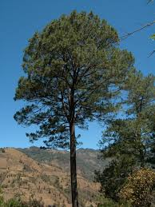
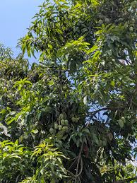

| Planta/Animal | Descripcion | Imagen | y tr>
|---|---|---|
| El Ocotal | El ocotal de San Lorenzo Texmelucan es la zona de bosque templado y frío más importante del municipio, ubicada en las partes altas de la Sierra Sur de Oaxaca (principalmente en parajes como Las Joyas y las faldas del Cerro Chinchal). Su nombre proviene de la enorme abundancia del pino ocote. |  |
| El árbol de mango. | El árbol de mango (Mangifera indica) en San Lorenzo Texmelucan es un cultivo frutal estratégico que se produce de forma natural y en proyectos agrícolas |  |
| árbol de guayaba | Es un fruto de autoconsumo muy valorado en los hogares. Se consume fresco directamente del árbol, o bien se utiliza para preparar aguas frescas, dulces tradicionales y es un ingrediente indispensable para el ponche caliente durante las fiestas de fin de año. En Texmelucan, las hojas de la guayaba son un remedio casero muy utilizado. Se hierven para preparar té medicinal que ayuda a cortar la diarrea, aliviar dolores estomacales y combatir infecciones de la garganta. | |
| Venado cola blanca | El venado cola blanca (Odocoileus virginianus) es el mamífero terrestre más emblemático y grande de San Lorenzo Texmelucan. Su hogar principal es el ocotal (las partes altas de bosque templado de pino y encino en las faldas del Cerro Chinchal), aunque baja en ocasiones hacia los montes y selvas bajas más cálidas durante ciertas épocas del año buscando resguardo | |
| Mapache | El mapache (Procyon lotor) que habita en San Lorenzo Texmelucan es un mamífero carnívoro mediano (aunque de dieta omnívora), famoso por su antifaz negro alrededor de los ojos y su cola anillada | |